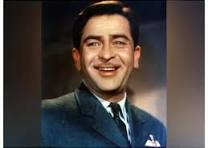

Tribute to Raj Kapoor

Raj Kapoor (1924-1988) was an iconic Indian film actor, producer, and director of Hindi cinema. He is regarded as one of the greatest and most influential filmmakers and actors in the history of cinema. Known for his timeless classics and his unique storytelling style, Raj Kapoor was a pioneer in bringing social issues to the silver screen. His work has left a lasting legacy and continues to inspire filmmakers around the world.
Notable Movies